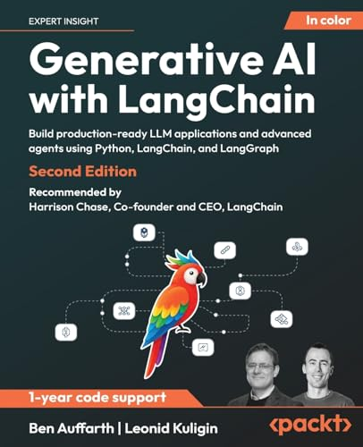

Writing / Book review
Generative AI with LangChain: From Prototype to Production Agents
I read Auffarth and Kuligin's second edition in full. My take on its production treatment of RAG, LangGraph agents, personal assistants, and the move from prototype to production.

- Book
- Generative AI with LangChain: Build production-ready LLM applications and advanced agents using Python, LangChain, and LangGraph
- Author
- Ben Auffarth and Leonid Kuligin
- Publisher
- Packt Publishing, 2025
- ISBN
- 9781837022014
- Assessment
- ★★★★☆ 4.0/5
provisional, based on public materials
VerdictA thorough production guide for LangChain and LangGraph, strongest on RAG and advanced agents, not a short introduction.
I read this book the way it wants to be read: with a prototype in mind and a healthy suspicion of anything that only works in a demo. The second edition is not an introduction to language models. It is about the move from a demonstration that works on one machine to a system other people can use with confidence. That is a different job, and a harder one. A prototype proves an idea is possible. A production system has to survive inputs nobody prepared, tools that fail, documents that change, questions outside the intended scope, and costs that add up with use. I came to it asking whether it offers a practical way to make that move, and where a reader will still need other sources.
The move from prototype to production
A prototype and a production system answer different questions. A prototype asks whether an approach can work at all. It can run on a small set of documents, one model, and a cooperative test user. A production system asks whether the approach can work again the next day, for a stranger, at a price that can be defended. It needs a definition of a correct answer, a defined response when retrieval finds nothing useful, a defined response when a tool call fails, a limit on reply time, and a record of cost per request. This edition leans into that shift, with its emphasis on production-ready LLM applications, updated code, retrieval, and advanced agents. The framework is a means to an operational end, not the end itself. That is the right order of priorities, and the book mostly keeps it.
One trap deserves attention early. In a framework book, the framework can become the subject and the application can become the example. This book mostly avoids that. Retrieval, agents, and personal assistants show up as parts of a working system, with decisions about data, tools, state, and evaluation attached to them. That serves a reader who already understands a basic model call and now needs to build something other people will rely on. It serves a reader looking for a quick tour of every framework less well, and it does not offer the mathematics behind the model. Neither of those readers is the audience, so I am not judging it against those aims.
Scope control is the other production question, and it is the one teams most often skip. Many LLM projects do not fail because the model is weak. They fail because nobody bounded the task. A system asked to answer any question about any document, take any action, and remember everything will be difficult to test and difficult to run. A good production guide helps a reader narrow the job: which inputs will be accepted, which outputs will be produced, and when the system will decline. The book presents personal assistants and agent applications as worked cases, which gives a concrete setting for practising that narrowing. The boundaries of those cases are part of the lesson, not a detail to ignore when an example is adapted to a different domain.
Shipping is not the finish line. It is one step in a loop: prototype, test, harden the failures, ship with limits, observe real use, and then repeat. A book that covers only the first two steps leaves a reader guessing at the rest. I liked that this edition treats the loop as the job, not as an afterthought.
RAG in production
Retrieval-augmented generation sounds simple at first. Pull the relevant passages, let the model answer from them, and the work is done. In production, every part of that sentence turns into a system of its own. Documents have to be collected, split, embedded, stored, and updated. Queries have to be understood well enough to find the right passages. Retrieved passages have to be checked for relevance, contradiction, and staleness. The answer has to be checked against the evidence, and the system has to behave sensibly when the evidence is absent. I think the book is right to put RAG at the centre, because RAG is where many production LLM applications either earn trust or lose it. It is also where the demo stops being a demo.
RAG is best understood as a pipeline that can be inspected, not as a single call. When an answer is wrong, the cause can sit in the document set, the splitting, the embedding, the retrieval query, the ranking, the prompt, or the model. When each stage can be inspected on its own, the faulty stage can be fixed. When only the final answer is visible, the model takes the blame for everything, and prompt changes continue long after the retrieval layer was identified as the real problem. The most useful thing this book does for RAG is to push the reader toward staged inspection from the start, with logging that records what was retrieved and what was cited.
Document handling deserves close attention, because that is where the messy reality lives. A production RAG system rarely works with a fixed set of clean documents. Sources change, formats vary, duplicates appear, and some documents should not be used at all. A team needs a way to decide which sources count as authoritative, how often they refresh, and what happens when a source is withdrawn. Access control also matters, so that a user does not receive an answer drawn from a document the user was never allowed to see. Those are product and governance decisions, and they belong before the retrieval code, not after it. A book that treated RAG as a purely technical pipeline, without naming those decisions, would leave a reader unprepared for the work that follows deployment.
Evaluation is the other production requirement for RAG, and it is harder than it looks. A retrieval test needs to show whether the right passages were found, not only whether the final answer sounded smooth. A generation test needs to show whether the answer was supported by the retrieved passages, not only whether it read well. A useful evaluation set therefore includes questions whose answer is absent from the documents, questions with more than one plausible answer, and questions where the documents disagree. Without those cases, a system can pass its tests and still fail in use, because the tests never exercised the paths where the system should have said that it did not know. I read the book's production emphasis as a claim that evaluation belongs inside the RAG system, not as an optional check at the end. It is a good claim. I would have liked even more of it.
A single request, when the pipeline is doing its job, follows a fixed path. The user asks, the application fetches, the model answers from the passages, and every step leaves a trace that can be checked later.
Advanced agents with LangGraph
Agents take the RAG pattern and add action. An agent does not only answer from retrieved text. It can plan a sequence of steps, call tools, observe results, revise its plan, and stop when the task is done or when it cannot proceed safely. That extra power adds failure modes. An agent can call the wrong tool, call the right tool with the wrong arguments, repeat a failing step, or keep going for too long without progress. I was glad to see advanced agents built on LangGraph here, because LangGraph represents the agent as a graph of states and transitions rather than as an unstructured loop. That makes it possible to see where the agent is, what it has tried, and what it should do next. An agent that never stops is not ambitious. It is a billing event.
State is the central idea in agent design, and it is easy to get wrong. A single model call is stateless in the plain sense that it receives a prompt and returns a response. An agent needs to remember the original goal, the steps already taken, the tool results already observed, and the constraints that still apply. When that state lives only inside a growing transcript, it becomes hard to debug and hard to limit. When it is explicit, a team can define what gets stored, how long it is kept, and when it is cleared. The focus on LangGraph points toward a discipline that matters in production: state should be visible and bounded. The questions I kept asking while reading were the same ones any team should ask. What happens when the state grows too large, when a tool returns an unexpected format, and when the agent hits a step limit without finishing the task.
Planning is the second central idea. Some tasks can be done with a fixed sequence of steps. Others need a plan that changes as results come in. A useful agent design tells those cases apart and does not reach for an open-ended loop where a fixed workflow would be clearer, cheaper, and safer. The book talks about agents that can reason, plan, and adapt, which is the right vocabulary, but the practical test is whether a reader learns when not to use an agent. A deterministic workflow with a small number of model calls will often beat an autonomous loop for a task with a known structure. I judged the book on whether it helps a reader make that call, rather than presenting agents as the default for every problem. Mostly, it does.
Tool use is where agent safety gets concrete. A tool is not only a function that the model can call. It is a permission, a validation step, and a limit. A tool that reads data needs to respect access control. A tool that writes data needs confirmation, idempotence where possible, and a clear audit trail. A tool that calls an external service needs timeouts, retries with limits, and a defined failure response. The framework can provide the mechanics of tool calling, but it cannot decide those policies. A production guide should connect tool design to those policies, and it should warn that a fluent plan is not the same as a safe action. I would check current framework behaviour for tool schemas and error handling before adopting an example, since those details change between versions.
LangChain and LangGraph are not rivals. They cover different parts of the job, and mixing them up is how teams end up with a graph for a task that a chain could have handled, or a chain that keeps growing until it needs a graph. I have seen the second one happen. It is not pretty.
| Tool | Best for | Watch out |
|---|---|---|
| LangChain | Chains, retrieval, and straightforward application flows | Do not stretch a fixed chain into an open-ended agent |
| LangGraph | Agents with state, branching, and cycles | Do not use a graph where a simple workflow would do |
Personal assistants as a worked case
Personal assistants make a good worked case for this book because they pull the earlier topics together. An assistant needs retrieval for personal or work documents, memory for context that persists across turns, tools for actions such as calendar or messaging operations, and a clear line between what it can do on its own and what needs confirmation. The book names personal assistants as part of the second edition, and that gives a reader one application through which to practise the integration of RAG, agents, and state. A worked case like this is most useful when its boundaries are studied as carefully as its capabilities.
Memory is the part of the assistant case that causes the most confusion, so it deserves a slower look. Memory can mean several different things, and the meanings should be kept separate. Short-term memory is the context of the current conversation. Long-term memory is information that persists across sessions, such as preferences or facts supplied by the user. Retrieved knowledge is information drawn from documents at the time of the question. Each kind carries different risks. Short-term memory can grow until it crowds out the current question. Long-term memory can go stale, or can store something that was never meant to be kept. Retrieved knowledge can be out of date or drawn from a source that should not be visible. A production assistant needs explicit rules for what is stored, for how long, and who can inspect or delete it. Those are the questions I would bring to the assistant case.
Strengths, limitations, and what it will not teach
The clear strength is the focus on the production transition. It connects retrieval, agents, and assistants to the operational questions that decide whether a system can be used with confidence, rather than treating each topic as a separate tutorial. Following that structure leaves a reader with a mental checklist for a real project, covering data freshness, evaluation, tool safety, state limits, and monitoring. That checklist is likely to stay useful even as specific framework interfaces change, because the underlying questions about evidence, action, and failure do not change as fast as the code that implements them.
The central limitation is time, and it applies to any book about a fast-moving framework. Named APIs, default behaviours, and recommended components can change between publication and a given project. The second edition is dated May 2025, so I would check current LangChain and LangGraph documentation before adopting an example, and treat the book as a design guide rather than a guarantee about current interfaces. It is also not a course in model internals, large-scale training, or security governance. For model construction, I would point a reader to Sebastian Raschka's Build a Large Language Model (From Scratch). For the broader application lifecycle, Chip Huyen's AI Engineering is the complementary book. Neither replaces domain review, privacy review, or legal review for a real deployment.
The book is wordy in places, and I will say that plainly. Some passages take the long way round, and a few valuable ideas sit buried under more text than they need. I noticed it mostly in the middle chapters. It never made me put the book down, but it did make me skim, and a production guide should not have to be skimmed to be read. A few passages are flat, too, the kind of writing that fills space instead of saying something. The book is at its best when it is specific, and at its weakest when it is filling space. The coverage itself is current and the examples are practical, which is what keeps the book useful, but the flow does not always do the ideas justice.
One more honest note. Size tells a reader something here, but it should not be overread. This book runs to 484 pages per Packt, while Learning LangChain runs to about 300 pages. That gap fits the story. One is a shorter orientation, the other is a longer working reference. Page count alone does not show which one a reader needs. The stage of the work does. For a reader starting out, the shorter book gets things moving. For a reader with a prototype that needs to be made operable, the longer book is the one to reach for.
A practical study plan and exercise
A good study plan starts with one concrete application in mind, such as a document assistant for a small set of public documents. First, I would write down the task, the users, the sources, and the cases where the system should decline. As the book moves through retrieval, agents, and assistants, I would record the decisions that apply to that application, along with the risks that remain. Not every feature in the book needs to be built. The point is to practise the production decisions, not to assemble the largest possible stack.
For an exercise, I would build a small RAG prototype with a fixed set of public documents, and then add a production checklist before calling it complete. Twenty questions are drafted, including questions whose answer is absent, and the definitions of grounded, incomplete, and unsupported are fixed in advance. The retrieved passages are inspected separately from the generated answer, latency and token use are recorded, and a test for a changed document is added. Then one agent step is added with a clear limit, such as a single tool call with validation, and the steps taken are recorded. That sequence teaches the main lesson of the book: production quality comes from observable stages and explicit limits, not from a longer prompt.
A second exercise takes the same prototype and breaks it on purpose. A stale document is introduced, then a tool that returns an error, then a question with no answer in the set, one at a time. For each case, the behaviour of the system is written down: whether it stopped safely, whether it reported the limit, or whether it pressed on with an unsupported answer. That failure log teaches more than another round of successful demonstrations, because it shows how the system behaves when conditions are not ideal. I would keep the log. It becomes the regression set for the next change.
Who should read it and how it compares
Software engineers and ML practitioners who already understand basic language model calls and now need to build a system that others will use are the likely audience. For a reader who wants a short introduction to LangChain, this book will feel longer than necessary. For a reader who wants model mathematics or large-scale training, a different companion will be needed. It can serve as a working reference for a team that has chosen the LangChain and LangGraph stack, provided current framework documentation is checked alongside it.
Compared with Learning LangChain by Oshin and Campos, this book is the deeper and longer alternative on the same stack. The O'Reilly book is the shorter, more introductory route into chains, memory, retrieval, and agents. This Packt second edition gives more room to production concerns, advanced agents, and the assistant case. For a first orientation, the shorter book is the place to start. For a reader who has already built a prototype and needs to make it operable, this book is the place to start. Compared with AI Engineering by Huyen, this book is narrower and more framework-specific. Huyen addresses application decisions across evaluation, adaptation, and serving without tying them to one stack. Auffarth and Kuligin show how those decisions play out inside LangChain and LangGraph. The two approaches complement each other, and the comparison describes scope, not a ranking of books.
Further reading and public sources
- Packt catalog entry for this book: Generative AI with LangChain, 2nd edition
- Author page for this book: Generative AI with LangChain
- Related reviews on this site: Learning LangChain and AI Engineering
Verdict
My rating is 4.0 out of 5, and it is mine, not a committee's. The production framing, the treatment of RAG as an observable pipeline, and the use of LangGraph for explicit agent state give a reader a practical path from a prototype to a system that can be operated. The book is wordy in places, and framework details should be checked against current documentation. It should be paired with an application-level guide for decisions that are not specific to one stack. For a reader who has chosen LangChain and LangGraph and needs to build beyond a demonstration, it is a thorough and useful reference, and the one I would hand over first.

Shivam Negi is an AI engineer and Principal Data Scientist who works on evaluating voice agents, small language models, and applied ML. More about me